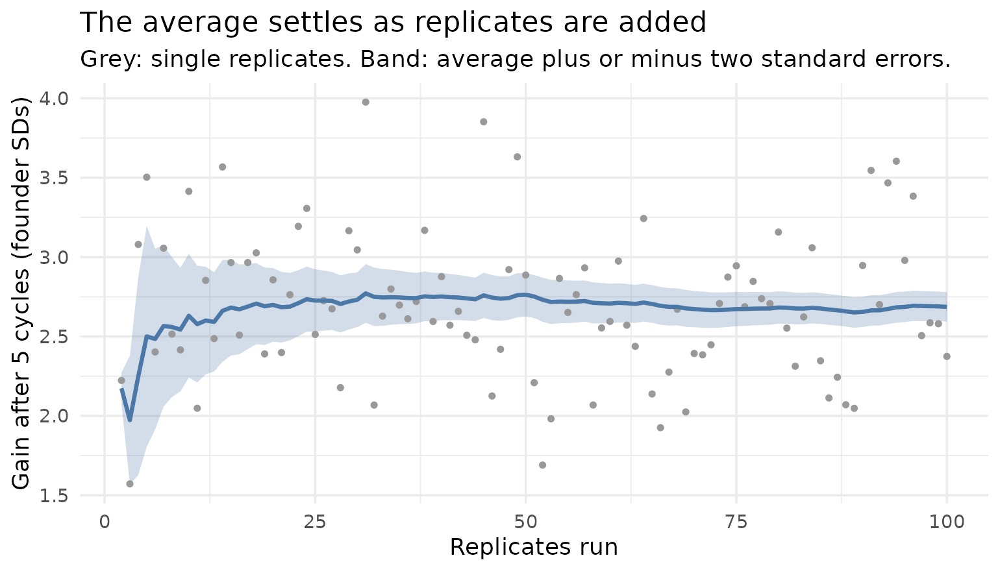
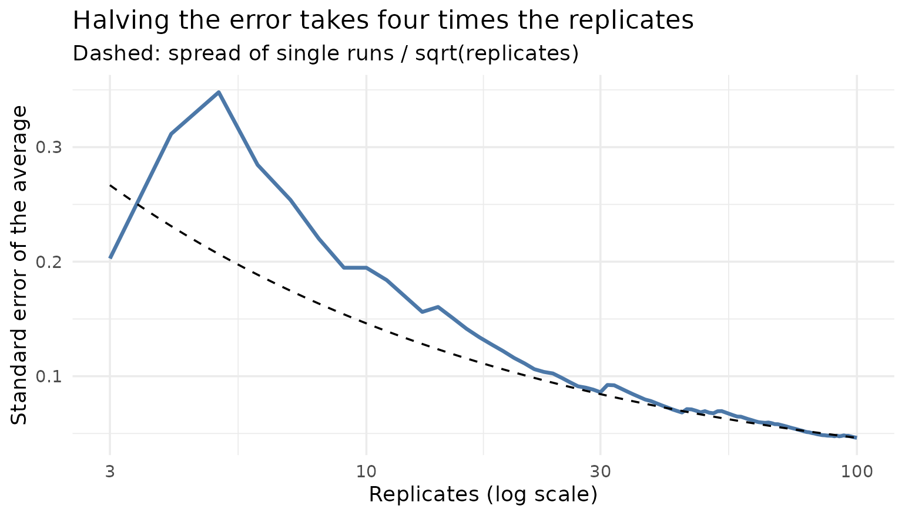
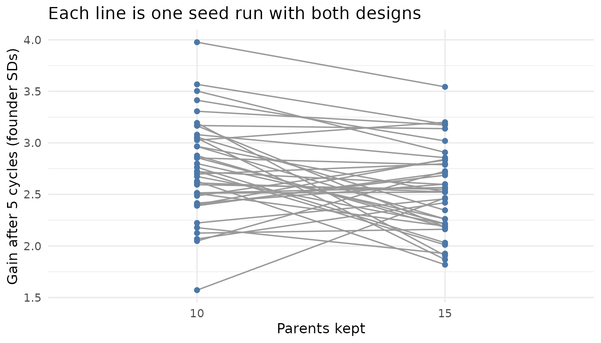

A simulation study answers questions with averages over replicates, so the first practical question is how many replicates to run. Too few and the answer is noise. Too many and you wait for days. This article shows how to choose, and introduces the idea that makes simulation studies much cheaper than field experiments: running every design on the same seeds.
We reuse the recurrent selection program from Why simulate?, now run for five cycles:
recurrent <- alphasim_program(
function(founders, SP, n_select, cycles) {
tracker <- asr_tracker(founders)
pop <- founders
for (cycle in seq_len(cycles)) {
pop <- setPheno(pop)
parents <- selectInd(pop, n_select)
pop <- randCross(parents, nCrosses = 200)
tracker$record(pop, year = cycle, cost = 200 * 15)
}
asr_summary(tracker)
},
n_select = 10, cycles = 5,
founders = asr_founders(n_founders = 200, n_chr = 10, seg_sites = 100, plot_h2 = 0.3),
params = list(n_select = sim_param(c(4, 60), label = "Parents kept"))
)The standard error shrinks with the square root
Run one design on 100 replicates and watch the running average settle:
res <- fit_resamples(recurrent, sim_replicates(100, seed = 1))
runs <- collect_metrics(res, summarize = FALSE)
runs$n <- seq_len(nrow(runs))
runs$running_mean <- cumsum(runs$release_gain) / runs$n
runs$running_se <- vapply(runs$n, function(k) sd(runs$release_gain[1:k]) / sqrt(k), 0)
ggplot(runs[-1, ], aes(n, running_mean)) +
geom_ribbon(aes(ymin = running_mean - 2 * running_se, ymax = running_mean + 2 * running_se),
fill = "#4C78A8", alpha = 0.25) +
geom_point(aes(y = release_gain), colour = "grey60", size = 1) +
geom_line(colour = "#4C78A8", linewidth = 1) +
labs(x = "Replicates run", y = "Gain after 5 cycles (founder SDs)",
title = "The average settles as replicates are added",
subtitle = "Grey: single replicates. Band: average plus or minus two standard errors.")
The band is the Monte Carlo uncertainty, and its width follows a simple rule. The standard error (SE) is the spread of single replicates divided by the square root of the number of replicates:
spread <- sd(runs$release_gain)
ggplot(runs[runs$n >= 3, ], aes(n, running_se)) +
geom_line(colour = "#4C78A8", linewidth = 1) +
geom_function(fun = function(n) spread / sqrt(n), linetype = 2) +
scale_x_log10() +
labs(x = "Replicates (log scale)", y = "Standard error of the average",
title = "Halving the error takes four times the replicates",
subtitle = "Dashed: spread of single runs / sqrt(replicates)")
So 4 times the replicates gives half the error, and 100 times the replicates gives a tenth. The returns diminish fast, which is why it pays to use replicates well rather than simply run more of them.
Same seeds, paired designs
Now compare two similar designs: keeping 10 parents versus keeping
15. With tune_grid(), both run on the same 40 seeds:
pair <- tune_grid(set_args(recurrent, n_select = tune()), sim_replicates(40, seed = 1),
grid = data.frame(n_select = c(10, 15)))
collect_metrics(pair) |> subset(.metric == "release_gain")
#> # A tibble: 2 × 7
#> n_select .metric direction mean n std_err .config
#> <dbl> <chr> <chr> <dbl> <int> <dbl> <chr>
#> 1 10 release_gain maximize 2.75 40 0.0745 Config001
#> 2 15 release_gain maximize 2.53 40 0.0656 Config002The two averages differ by about 0.22 founder SDs. Is that a real difference or luck? Look at the replicates seed by seed:
raw <- collect_metrics(pair, summarize = FALSE)
ggplot(raw, aes(factor(n_select), release_gain, group = id)) +
geom_line(colour = "grey60") +
geom_point(colour = "#4C78A8") +
labs(x = "Parents kept", y = "Gain after 5 cycles (founder SDs)",
title = "Each line is one seed run with both designs")
Part of the spread is shared. A seed that draws founders with a lot
of useful variation tends to do well under both designs,
because both started from those founders. What matters for choosing a
design is the slope of each line, the difference on the same
seed, and those shared ups and downs cancel out of it.
compare_designs() works with these paired differences:
cmp <- compare_designs(pair, "Config001", "Config002", metric = "release_gain")
cmp
#> # A tibble: 1 × 7
#> .metric a b mean_difference std_err n p_b_worse
#> <chr> <chr> <chr> <dbl> <dbl> <int> <dbl>
#> 1 release_gain Config001 Config002 -0.222 0.0778 40 0.00348Compare that with the error you would get from unpaired runs, where each design had its own seeds:
s <- collect_metrics(pair) |> subset(.metric == "release_gain")
unpaired_se <- sqrt(sum(s$std_err^2))
data.frame(comparison = c("Paired (same seeds)", "Unpaired (different seeds)"),
std_err = c(cmp$std_err, unpaired_se))
#> comparison std_err
#> 1 Paired (same seeds) 0.07783718
#> 2 Unpaired (different seeds) 0.09929113Here pairing cut the standard error of the difference by a factor of 1.3, worth about 1.6 times as many unpaired replicates. How much pairing helps depends on how much of the randomness the designs share. Once two designs select different parents, their crosses and plot errors take different random paths, so a program that runs many cycles shares less than one that differs only in its last step. Comparisons of trial designs or budgets on the same lines, for example, share far more and gain far more. Pairing never hurts, so tidyagsim always pairs. Every design in a study runs on the same seeds (statisticians call these common random numbers), and every helper that compares designs uses the paired differences.
A rule of thumb
Decide the smallest difference between designs that would change what you do. Call it δ. You want the standard error of a paired difference to be well below δ, say δ / 2. A pilot study of 10 to 20 replicates tells you the spread of the paired differences, sd, and then
replicates needed ≈ (2 sd / δ)²
s_d <- cmp$std_err * sqrt(cmp$n) # spread of the paired differences
delta <- 0.1 # a gain of 0.1 founder SDs matters to us
ceiling((2 * s_d / delta)^2)
#> [1] 97When you compare many designs, most of them are clearly worse after a
few replicates and only the close calls need many.
tune_race() does exactly that: it drops designs once they
are significantly worse than the leader and spends the remaining
replicates on the contenders. See Choosing a design.